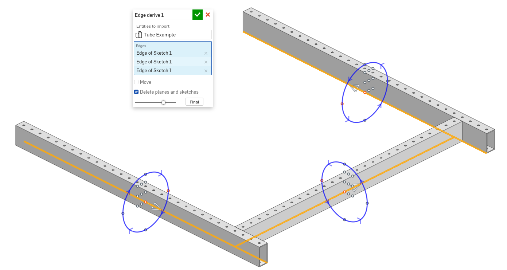

Edge derive¶
{kind=link}
Edge derive makes it possible to quickly derive length-specific parts into a part studio. Mate connectors attatched to derived parts are automatically converted into selectable points, and various positioning options are also avaialable by default.
The Edge derive FeatureScript can be found here: Edge derive document
Steps for deriving entities¶
Create a Edge derive feature by selecting it from your FeatureScript dropdown.
Specify Entities to import.
Select one or more edges to derive parts along.
For each selected edge, a set of manipulators are automatically created in the graphics window which enable positioning.
{kind=link}
Choose whether to Move parts relative to their reference edges.
Choose whether to Delete planes and sketches from Entities to import.
Click
 .
.
{kind=link}
Steps for setting up parts to be derived with edge derive¶
Create a new part studio.
In the Configuration panel on the right side of the screen, add a Confirguation variable named “length” (lowercase ‘l’).
Use the configuration to drive the length of your part.
If desired, add one or more mate connectors with their z-axis facing upwards to the middle of the part. When the part is derived using Edge derive, these mate connectors will be converted into selectable points.
Add additional configurations and modifications to the part studio as desired.
{kind=link}
Note
A sample part studio can also be found here: Edge derive example part studio